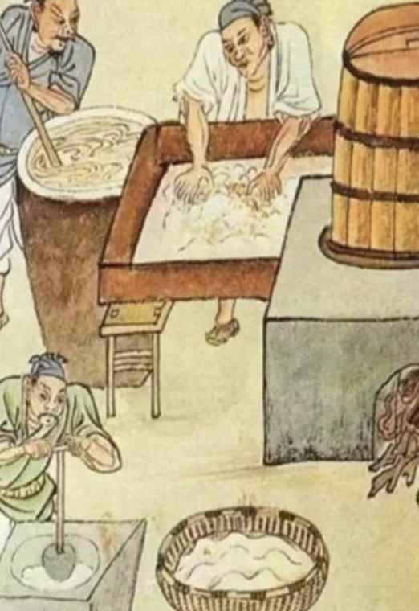

Ancient Origins (1600 BC - 10th century AD)
During the Shang Zhou dynasties of China:

The royal and noble families had mastered the technique of storing ice in winter and drinking chilled wine in summer (The Rites of Zhou records that "ice is held by a person"). During the Tang Dynasty, "Su Shan" emerged. Cream was frozen into a mountain shape and decorated with honey and petals, which was regarded as the prototype of ice cream.
Persian Empire:
Invented "Sharbat", a mixture of ice, fruit juice and rose water, which was later introduced to China through the Silk Road (called "ice cream" in the Yuan Dynasty).
Ancient Rome:
Emperor Nero used snow mixed with honey and fruit juice to make a cold drink.
Back to the main page